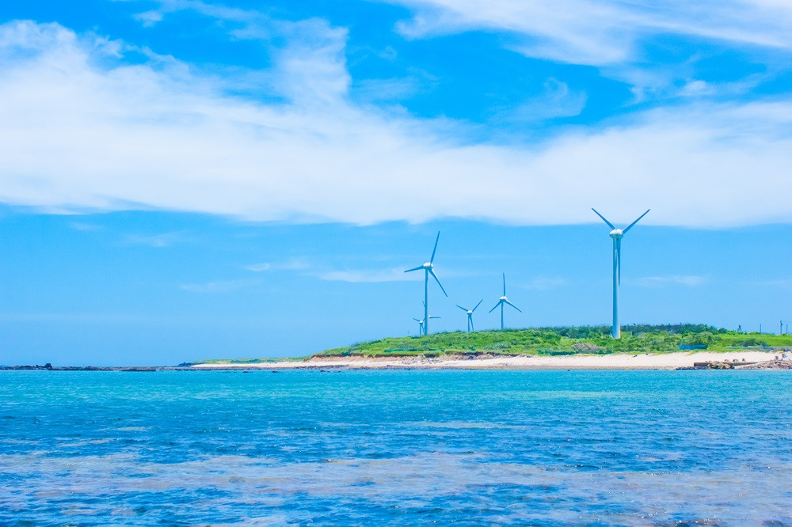
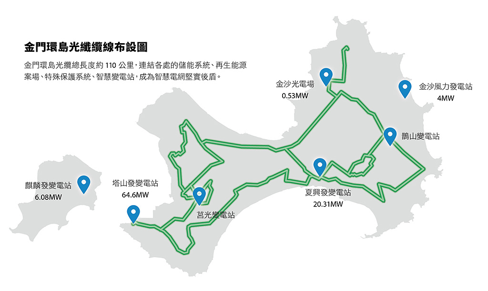

非核家園、能源轉型已成為台灣當前施政目標，綠能建設早已納入「前瞻基礎建設計畫」中， 預期可在 2025 年吸引 1.8 兆元民間投資。當本島綠能產業如火如荼進行，資源相對匱乏的離島， 也跟上腳步了嗎？
— 倡議家 編按金門酒糟變綠電？
離島綠能「因地制宜」的生存法則
台灣離島的再生能源發展各具特色。澎湖擁有條件極佳的風場，是全台最早建置風機的地區， 目標在 2025 年達成 100% 使用綠能；馬祖日照短、坡地多，風力發電潛力大於太陽能。
而在金門，則以發展屋頂型光電為主，但案場規模有限，因此近期開始投入生質能。 金門酒廠就利用釀酒後的酒糟作為生質能發電原料，相較風力與太陽能容易受地理限制， 生質能只要原料充足，到哪個地方都可以做。
「不只是金門，而是全台灣都應該透過地方自治條例，做彈性調整。」
— 劉華嶽，國立金門大學土木與工程管理學系教授
離島超車本島 — 金門打造儲能、虛擬電廠
成為綠能實驗場
澎湖與金門的再生能源佔比已超越本島。根據澎湖縣政府統計，2022 年整體發電量有 75% 來自再生能源， 台電也曾於 2023 年指出，金門綠電佔比在 228 連假期間創下新高，達 52.25%， 相當於每 2 度電就有 1 度來自再生能源。
劉華嶽認為，金門在台灣離島的再生能源版圖中扮演重要角色，是理想實驗場域， 可以把金門的經驗回饋給台灣本島。約莫 10 年前，他就發表相關論文， 點出透過太陽能達到「分散式電力輔助集中式電廠」的優勢。

將再生能源結合儲能與充電樁打造虛擬電廠，是台電近 2 年在金門的具體實踐。 該系統導入智慧調度，在用電尖峰支援集中式電廠，離峰時段提供周邊設施使用再生能源， 多餘電力還可躉售給台電。
「如果家家戶戶能輔助儲能設備建設的話，不會有跳電問題。在台灣應該全力推展。」
— 劉華嶽教授錢坑、民意反彈、地方意識不足…
離島綠能發展挑戰多
金門綠能發展雖有亮點，卻也面臨重重挑戰。劉華嶽這些年嘗試將德國、丹麥的社區合作社經驗 輸入金門，但光是資金缺口、年輕人外流，就使推廣困難重重。
開源、節能一樣重要 —
離島綠能如何真正落實 ESG？
劉華嶽在金門的日子，見證了當地碳排量翻倍成長，從 17 萬噸增至 37 萬噸。 加上孤立電網造成一度電費用近 8 元的高電費，凸顯減碳與再生能源輔助發電的重要性。
他直指，大部分能源政策都在講開源，卻鮮少討論如何節能。以他自己蓋的零碳住宅為例， 建築內外共採用 14 種減碳方法，用電量不到一般透天厝的三分之二。
離島的再生能源發展，不只是技術挑戰，更考驗社區共識、政府策略與企業治理。 金門小尺度的實踐，堪稱台灣氣候治理的縮影，這些小而美的經驗， 依然為台灣勾勒出值得借鑑的永續路徑。
— 文章結語